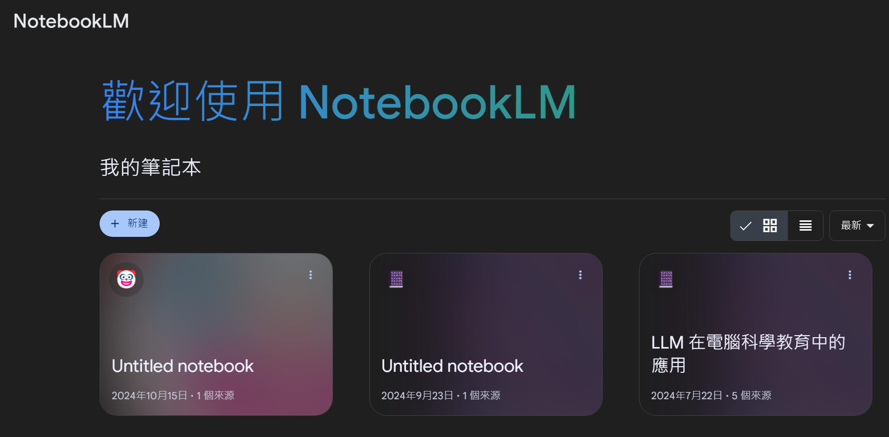
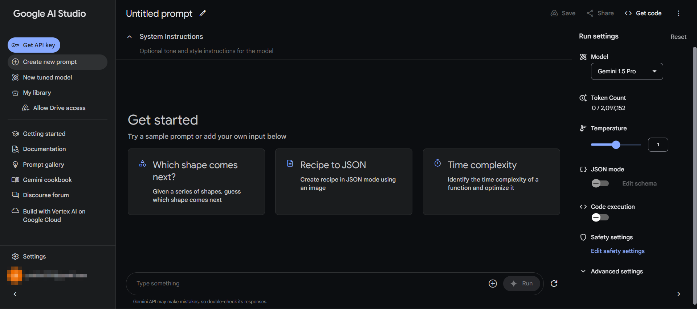
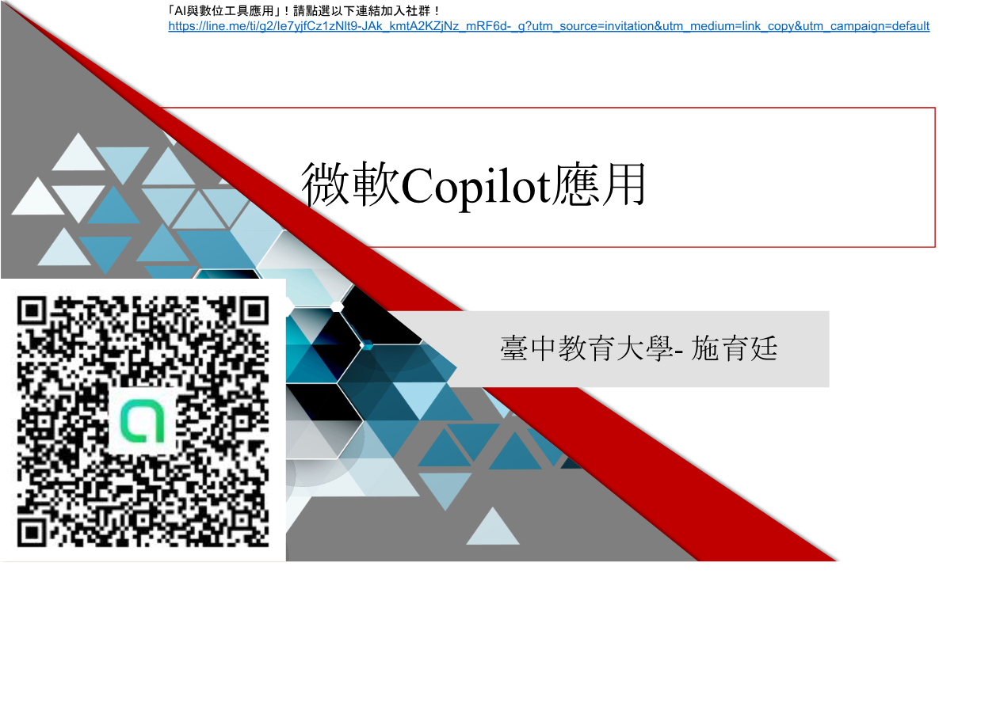

Learning goals
- Compare tools based on task fit rather than popularity.
- Understand the differences among chat, research, productivity, and workflow tools.
- Develop a personal decision framework for platform choice.
Key ideas
Tool choice can be guided by four questions: What kind of task is this? What inputs are involved? What output do I need? Does it need to connect with existing systems?
For teachers and researchers, source traceability, permissions, and privacy are just as important as convenience.
Visual cases

NotebookLM represents document-centered and source-aware work, especially useful for reading and organizing materials.

AI Studio represents experimentation, prompting, and model testing in a more technical environment.

Copilot offers a strong example of AI embedded into everyday productivity and office tasks.
Activities
Activity 1: Tool matching
Assign one appropriate platform to each of several work scenarios and explain the match.
Activity 2: Platform comparison card
Create a compact comparison of strengths, limits, ideal use cases, and caution points.
Task
Write a personal AI tool guide for teaching, research, and administrative use.
Further viewing
This unit pairs well with the YouTube video archive and playlists on tool comparison, feature walkthroughs, and platform switching logic, helping learners connect selection criteria with actual usage scenes.